Bütün tarifler, tek dizinde
Kategoriye, öğüne, süreye ve beslenme etiketine göre daralt; sofrana uygun tarifi bul.
- 36
- tarif
- 20
- kategori
- 36
- besin değeri hesaplı
 Kahvaltılık224 kcal
Kahvaltılık224 kcalMenemen
Domatesli, biberli klasik menemen; yağ yarıya iner ve zeytinyağıyla pişer, domates miktarı artar.
 Yumurta Tarifleri203 kcal
Yumurta Tarifleri203 kcalSebzeli Peynirli Omlet
Kaşarlı yumuşak omlet; tereyağı yerine bir çay kaşığı zeytinyağı, kaşar yarıya iner, içine domates ve biber girer.
 Yumurta Tarifleri188 kcal
Yumurta Tarifleri188 kcalIspanaklı Omlet
Soğanlı, peynirli ıspanaklı omlet; ıspanak iki katına çıkar, yağ üçte birine iner, tam yağlı beyaz peynir yerine az yağlı beyaz peynir kullanılır.
 Kahvaltılık139 kcal
Kahvaltılık139 kcalOvernight Yulaf
Süt ve yoğurtla bir gece bekleyen, çilek ve muzla sunulan soğuk yulaf; bal çıkar, tatlılık meyveden gelir, süt ve yoğurt yarım yağlı olur.
 Yumurta Tarifleri332 kcal
Yumurta Tarifleri332 kcalÇılbır
Süzme yoğurt, akışkan sarılı poşe yumurta ve pul biber aynı kalır; tereyağlı sosun yerini ocakta kızdırılmayan pul biberli zeytinyağı alır.
 Yumurta Tarifleri185 kcal
Yumurta Tarifleri185 kcalOtlu Kaygana
Maydanozlu, taze soğanlı yumurtalı krep; tava kâğıt havluyla yağlanır, yağ üçte birine iner, un tam buğday olur, yeşillik artar.
 Yumurta Tarifleri170 kcal
Yumurta Tarifleri170 kcalSebzeli Yumurta Muffin
Fırında porsiyonluk yumurta muffin; sebze iki katına çıkar, kaşar yarıya iner, kalıp bir çay kaşığı yağla yağlanır.
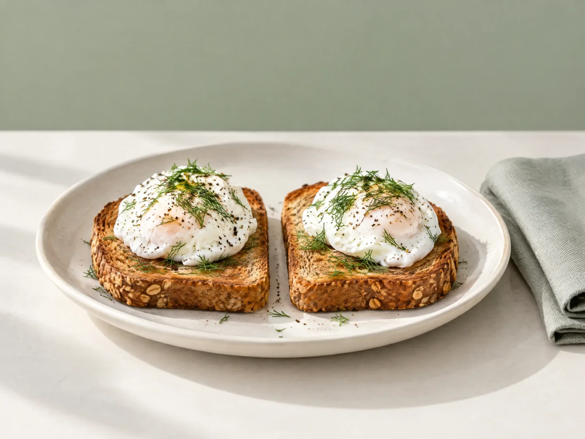
Kahvaltılık155 kcalPoşe Yumurtalı Ekmek
Kızarmış tam buğday ekmeğinin üzerinde sarısı akışkan poşe yumurta; ekmeğe sürülen tereyağı yerine bir çay kaşığı zeytinyağı gezdirilir.
 Kahvaltılık220 kcal
Kahvaltılık220 kcalKahvaltı Patatesi
Biberli, salçalı baharatlı tava patatesi; patatesler önce haşlanır, zeytinyağı dörtte birine iner, tavaya fazladan biber girer.
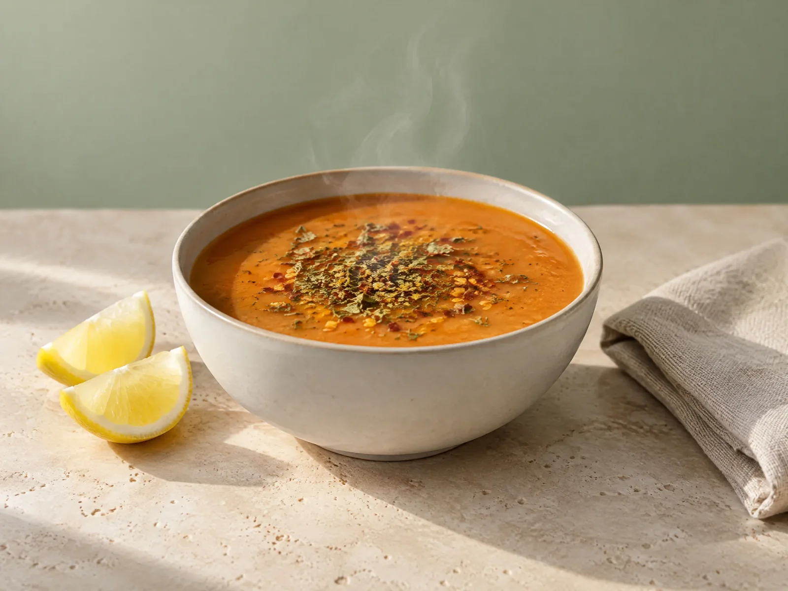
Çorba172 kcalMercimek Çorbası
Servis için ayrıca yağ yakılmaz; nane ve pul biber doğrudan çorbaya serpilir. Yağ üçte birine iner, patatesin yerini havuç alır.
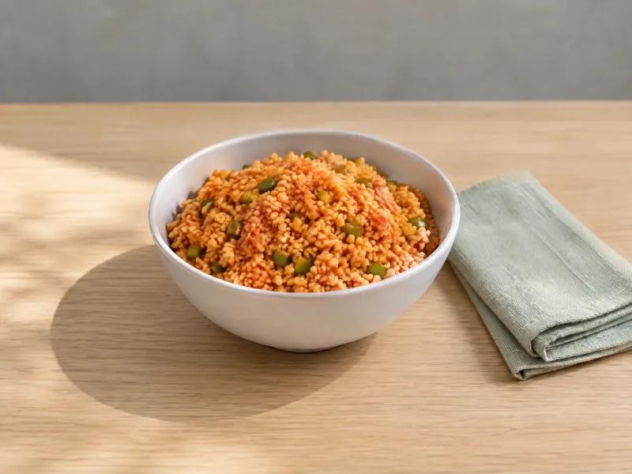
Pilav315 kcalDomatesli Bulgur Pilavı
Tane tane domatesli bulgur pilavı; zeytinyağı üçte birine iner, domates artar, bulgur yağda kavrulmadan domatesli sosa eklenir.
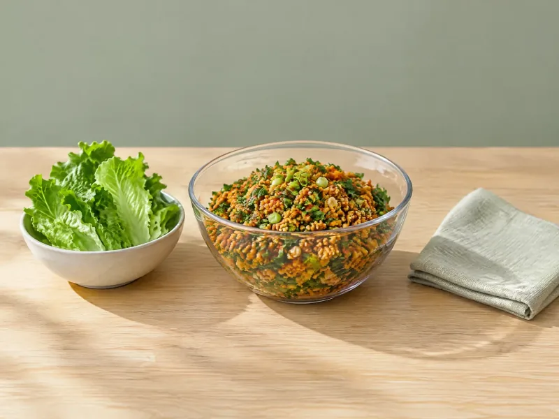
Salata254 kcalKısır
İnce bulgurlu klasik kısır; zeytinyağı yarıya iner, maydanoz ve taze soğan iki katına çıkar.
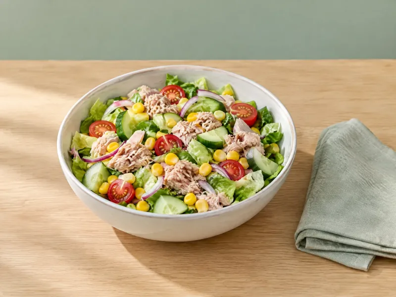
Salata251 kcalTon Balıklı Salata
Mısırlı, marullu ton balıklı salata; yağlı konserve yerine suda ton balığı kullanılır, zeytinyağı üçte birine iner, yeşillik ve domates artar.
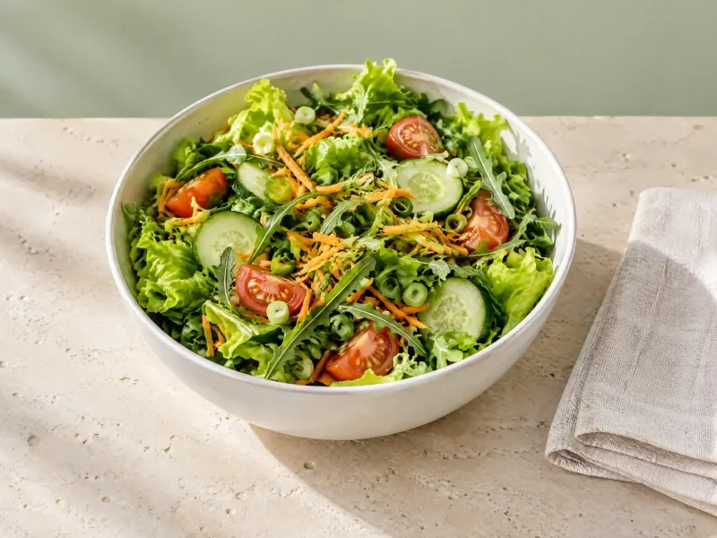
Salata101 kcalMevsim Salatası
Nar ekşili mevsim yeşillik salatası; zeytinyağı üçte birine iner, sosun ekşiliği nar ekşisi ve limonla tamamlanır.
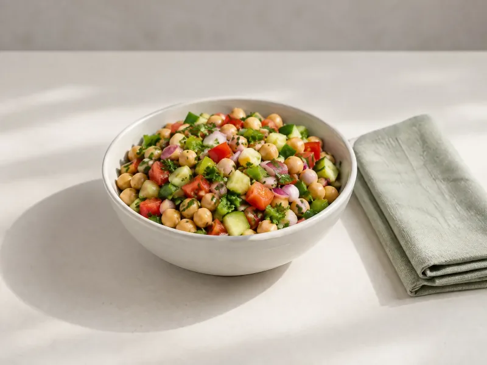
Salata326 kcalNohut Salatası
Haşlanmış nohutlu, kimyonlu zeytinyağlı salata; zeytinyağı üçte birine iner, domates, biber ve maydanoz artar.
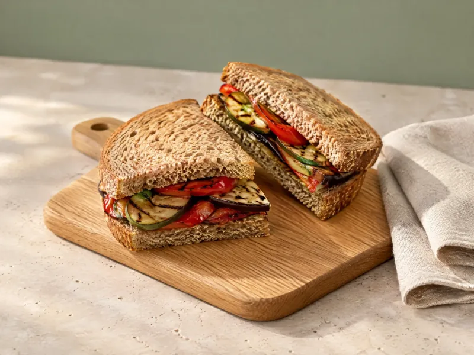
Sandviç, Burger ve Dürüm252 kcalIzgara Sebzeli Sandviç
Közlenmiş kabak, patlıcan ve kırmızı biberli sandviç; kepekli ekmekle hazırlanır, zeytinyağı üçte birine iner, ekmeğe sarımsaklı süzme yoğurt sürülür.
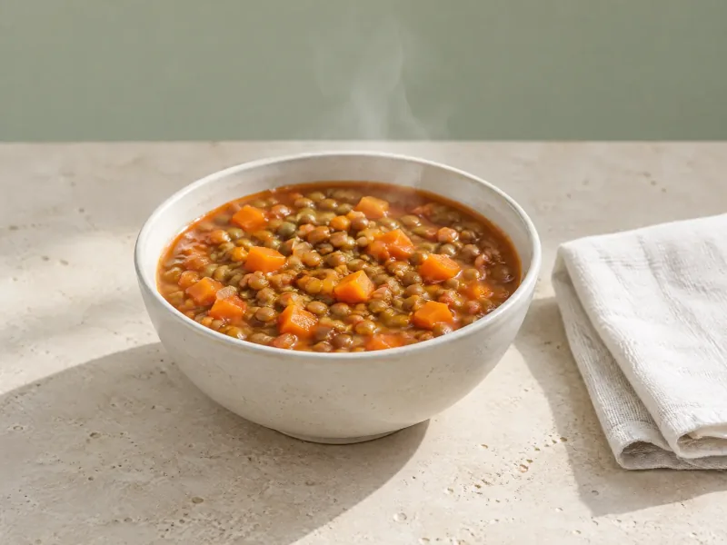
Bakliyat272 kcalYeşil Mercimek Yemeği
Kimyonlu etsiz yeşil mercimek yemeği; zeytinyağı dörtte birine iner, salça azalır, tencereye havuç ve rendelenmiş domates girer.
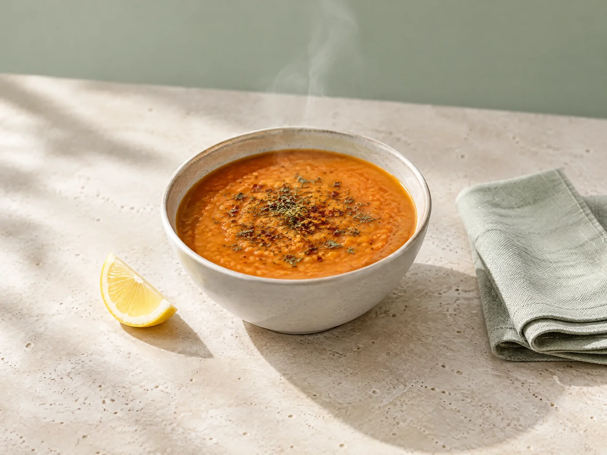
Çorba168 kcalEzogelin Çorbası
Naneli, pul biberli ezogelin; çorbadaki ve üstteki zeytinyağı beşte bire yakın iner, pirincin yerini de bulgur alır.
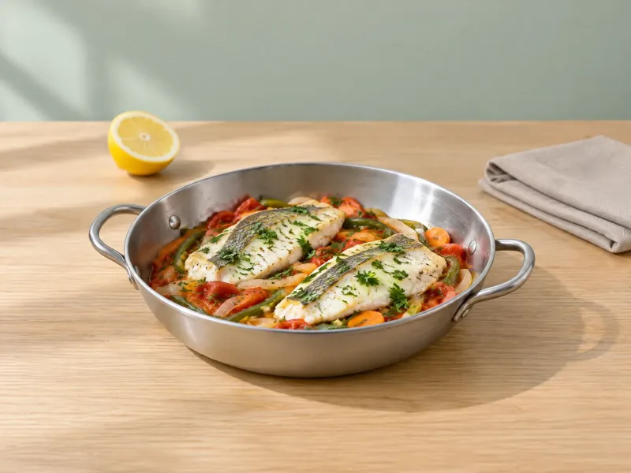
Balık ve Deniz Ürünleri408 kcalSebzeli Levrek Buğulama
Domatesli, biberli levrek buğulama; sebzeler yağda kavrulmak yerine kendi suyunda yumuşar, zeytinyağı dörtte birine iner, tencereye havuç girer.
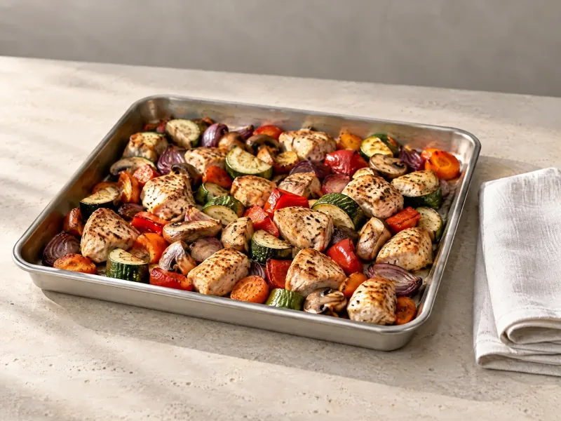
Tavuk ve Hindi193 kcalFırında Sebzeli Tavuk
Küp tavuk göğsü, biber, kabak ve mor soğanla tek tepside fırınlanır; yağ yarıya iner, tepsiye mantar ve havuç girer.
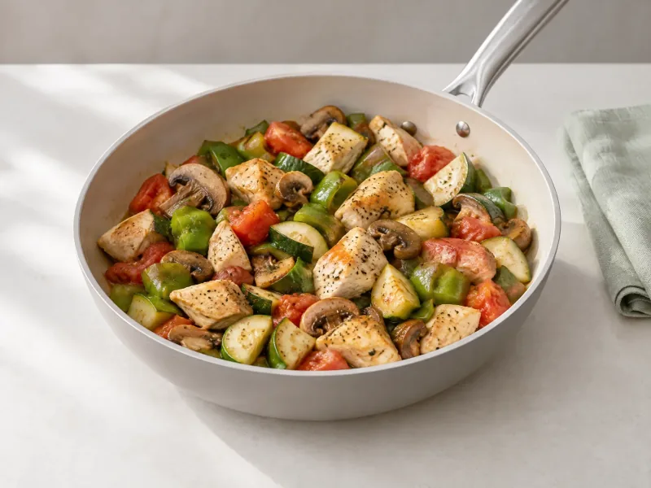
Tavuk ve Hindi235 kcalSebzeli Tavuk Sote
Tavada tavuk sote; yağ üçte birine iner, mantar artar, tavaya bir kabak girer ve tavuk göğsüyle hazırlanır.
 Tavuk ve Hindi284 kcal
Tavuk ve Hindi284 kcalYoğurtlu Tavuk Şiş
Yoğurtlu marine, ızgarada pişen tavuk göğsü; lavaş yerine közlenmiş biber ve bol salatayla servis edilir.
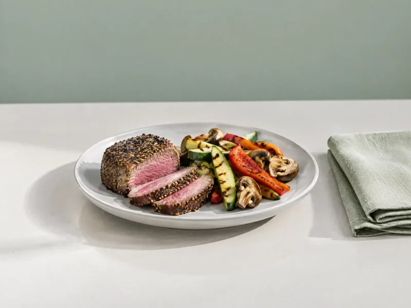
Kırmızı Et287 kcalIzgara Sebzeli Dana Bonfile
Karabiberle kaplanıp yüksek ateşte mühürlenen dana bonfile; dilimler biraz küçülür, tereyağı yerine bir kaşık zeytinyağı, yanına aynı tavada kabak, biber ve mantar girer.
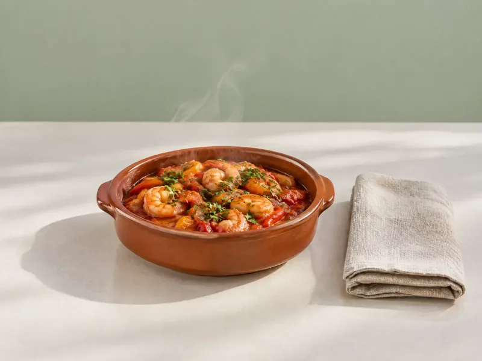
Balık ve Deniz Ürünleri208 kcalKaridesli Güveç
Domatesli, biberli karides güveç; zeytinyağı dörtte birine iner, domates ve biber artar, tuz azalır.
 Zeytinyağlılar237 kcal
Zeytinyağlılar237 kcalİmambayıldı
Patlıcanlar yağda sotelenmek yerine fırında yumuşar; zeytinyağı üçte birine iner, harca şeker eklenmez.
 Zeytinyağlılar195 kcal
Zeytinyağlılar195 kcalZeytinyağlı Pırasa
Havuçlu, pirinçli zeytinyağlı pırasa; zeytinyağı yarım su bardağından 3 yemek kaşığına iner, pırasa ve havuç artar, şeker eklenmez.
 Sebze173 kcal
Sebze173 kcalFırında Sebze Türlüsü
Fırında zeytinyağlı karışık sebze; yağ yarım su bardağından 3 yemek kaşığına iner, patatesin yarısının yerini havuç ve dolmalık biber alır.
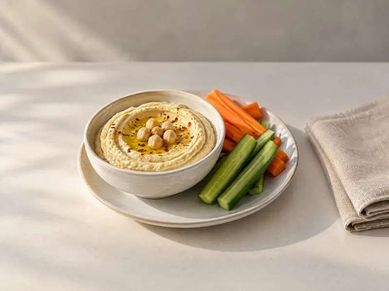
Meze225 kcalSebze Çubuklu Humus
Tahinli nohut ezmesi; tahin üçte ikisine iner, ezmenin içindeki zeytinyağının yerini nohut haşlama suyu alır, humus ekmek yerine havuç ve salatalık çubuklarıyla servis edilir.
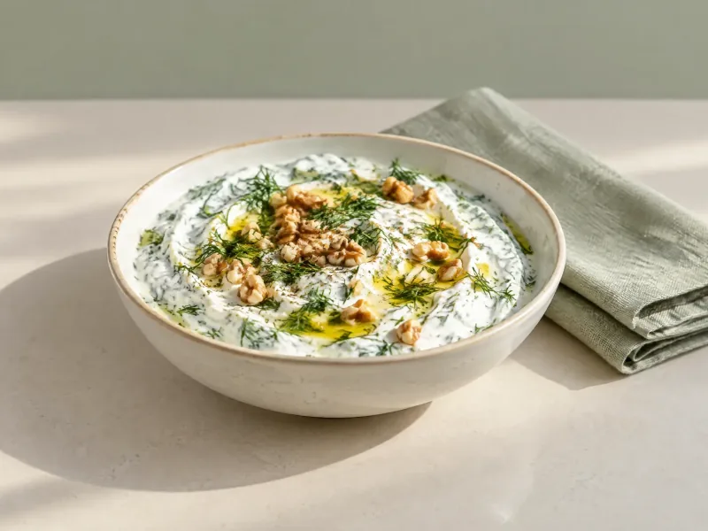
Meze183 kcalHaydari
Sarımsaklı süzme yoğurt mezesi; dereotu artar, üstteki zeytinyağı üçte birine, ceviz yarıya iner.
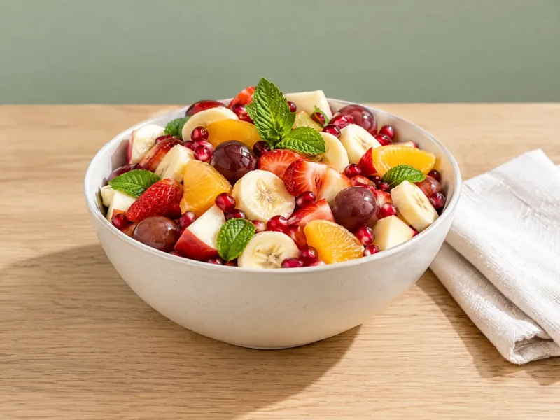
Meyve Tarifleri117 kcalNaneli Meyve Salatası
Elmalı, muzlu, portakallı, çilekli ve üzümlü meyve salatası; bal eklenmez, sosu limon ve portakal suyu verir, üstüne nar taneleri serpilir.
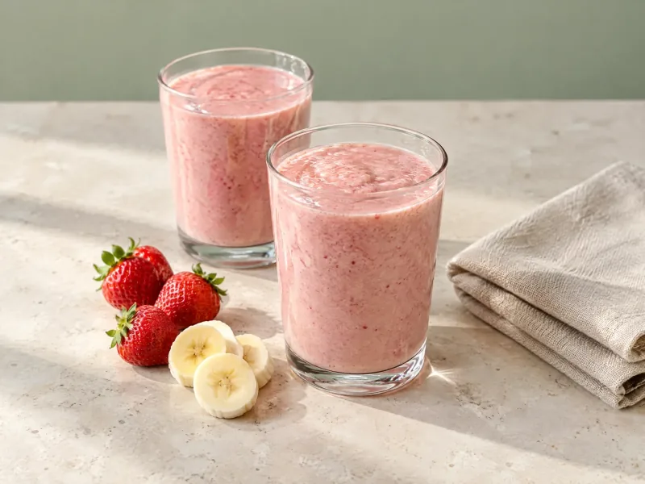
İçecek158 kcalÇilekli Smoothie
Çilekli, muzlu, yoğurtlu smoothie; bal eklenmez, tatlılık çilek ve olgun muzdan gelir, yoğurt ve süt yarım yağlıdır.
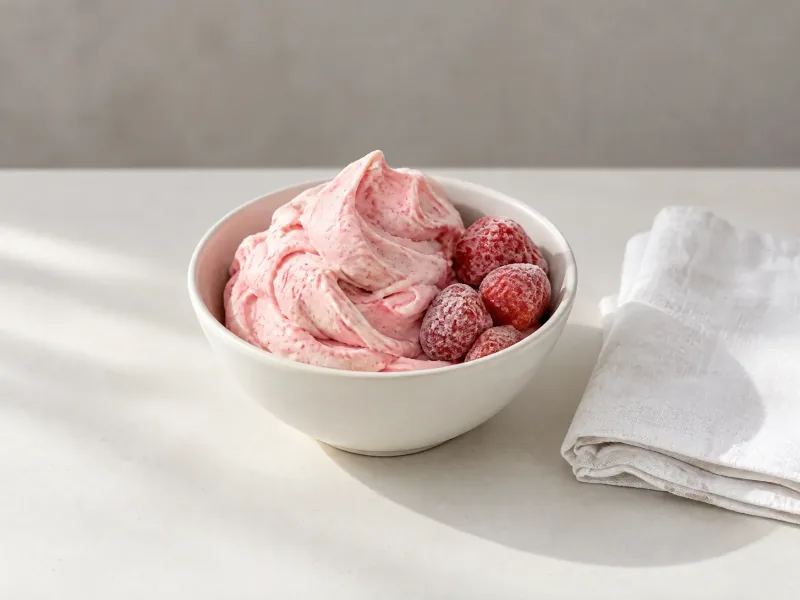
Dondurma ve Soğuk Tatlılar98 kcalÇilekli Donmuş Yoğurt
Donmuş çilekli yoğurt tatlısı; bal üçte birine iner, süzme yoğurdun yarısının yerini yarım yağlı yoğurt alır.
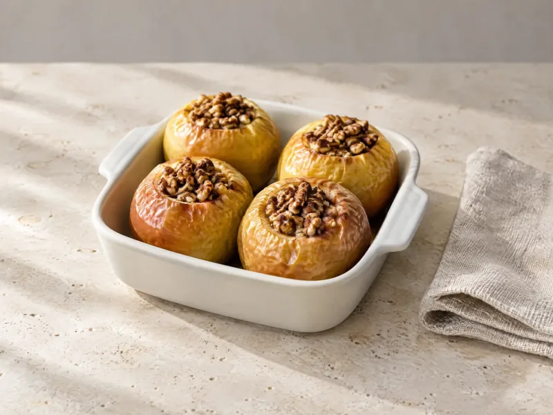
Tatlı193 kcalFırında Tarçınlı Elma
Cevizli, tarçınlı fırın elması; içine tereyağı konmaz, esmer şeker üçte birine, ceviz yarıya iner, tatlılığı elmanın kendisi verir.
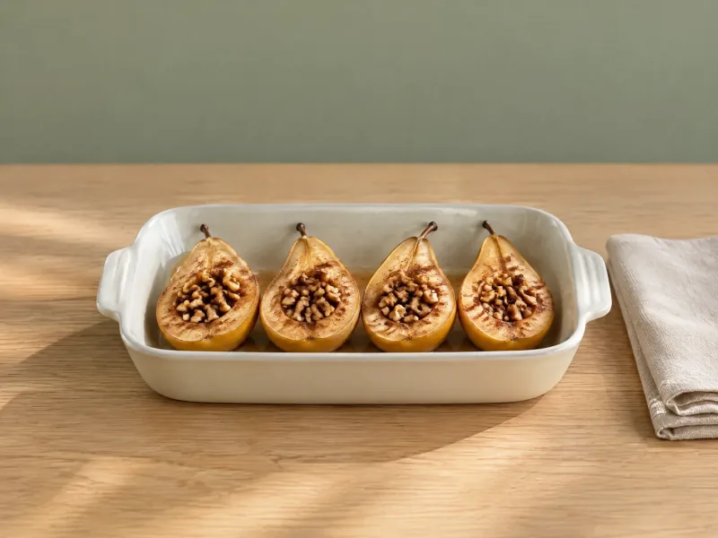
Tatlı113 kcalTarçınlı Fırın Armudu
Cevizli, tarçınlı fırın armudu; bal üçte birine, ceviz yarıya iner, üstüne tereyağı konmaz.
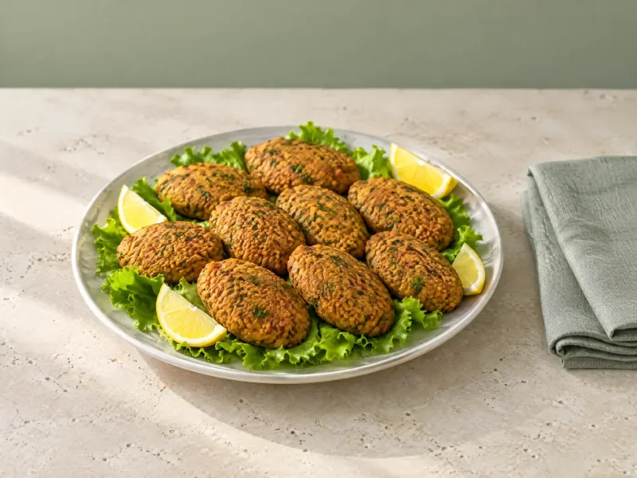
Bakliyat262 kcalMercimek Köftesi
Kırmızı mercimekli, bulgurlu köfte; harçta mercimeğin payı artar, zeytinyağı yarıya iner, taze soğan ve maydanoz iki katına çıkar.
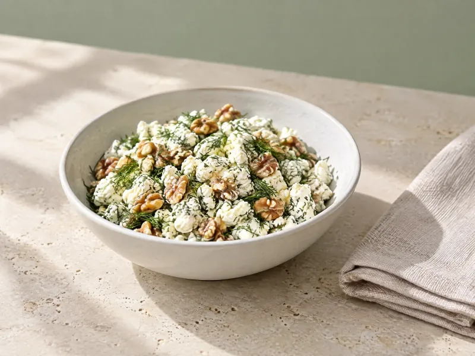
Meze176 kcalGirit Ezmesi
Beyaz peynirli, cevizli, dereotlu meze; peynir az yağlı beyaz peynir olur, ceviz yarıya, zeytinyağı üçte birine iner, dereotu artar.
 Sponsorlu
SponsorluGlütensiz beslenmeye başlarken beş kural
Glütensiz yulaf, kraker ve ekmek seçenekleri.
 Sponsorlu · İncele
Sponsorlu · İncele  Sponsorlu
SponsorluAntrenman sonrası beslenme
Matara, ölçü kabı ve spor ekipmanları tek mağazada.
 Sponsorlu · Keşfet
Sponsorlu · Keşfet Aramana uyan sonuç yok
Bu süzgeçlere uyan tarif yok. Bir süzgeci kaldırmayı dene.
Bu önizlemede canlı dadadiet.com'daki 143 tariften plan oluşturucunun kullandığı 36 tanesi listelenir (prototip örneği); süzgeç sayıları bu tarifleri sayar. Tarif metinleri ve değerleri canlıdan alındı (9 Kasım 2026).
Bu sayfadaki içerik genel bilgilendirme amaçlıdır; tıbbi teşhis veya tedavi yerine geçmez. Kişiye özel beslenme planı yalnızca yetkili bir diyetisyen tarafından hazırlanır. Gebelik, kronik hastalık, düzenli ilaç kullanımı, çocuk beslenmesi veya klinik bir durum varsa plana başlamadan önce hekim ve diyetisyen kontrolü zorunludur.